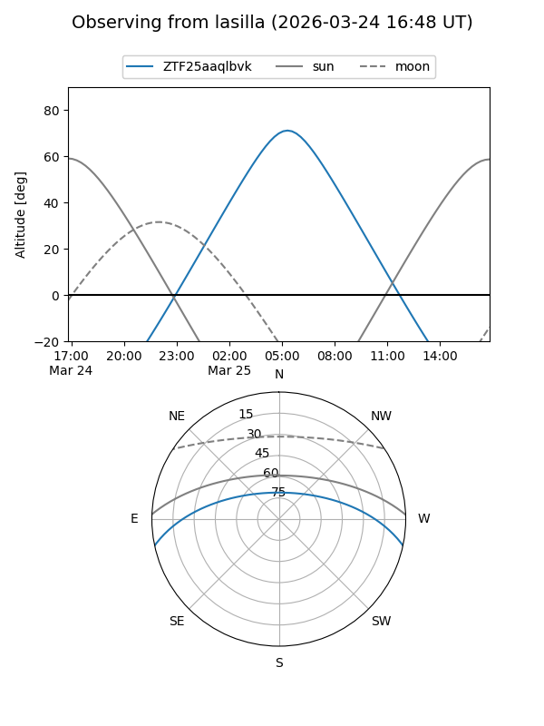
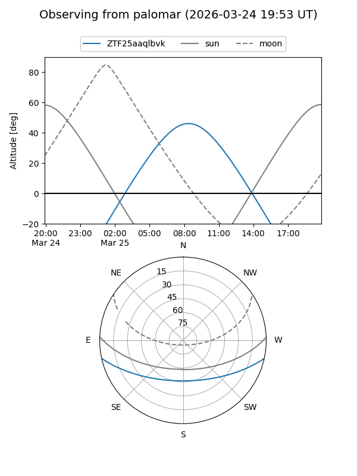

ZTF25aaqlbvk
Target ZTF25aaqlbvk at 2026-03-25 09:32
Aliases and brokers:
FINK: link
Lasair: link
ALeRCE: link
alt names
ZTF25aaqlbvk (ztf,fink_ztf)
Coordinates:
equatorial (ra, dec) = 191.2925,-10.32628
equatorial (HMS+DMS) = 12:45:10.20,-10:19:34.60
galactic (l, b) = (300.3982,+52.51463)
Flags:
Photometry:
last ztfg=17.71
1 ztfg detections
Lightcurve
Visibility


Additional plots